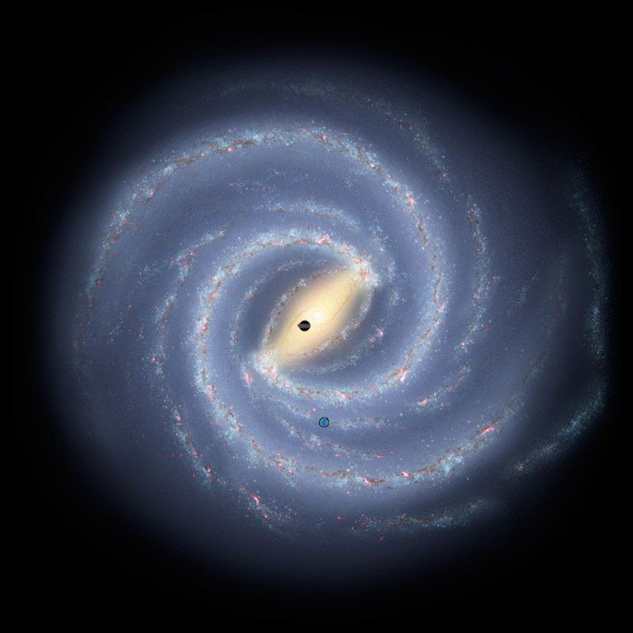

Context
Around the 1500s, a period called the Scientific Revolution began in Europe. During the centuries after, scientists began to question the beliefs of the people in ancient and medieval times, and use new technologies and research methods in the quest to understand the universe more accurately. Towards the end of the period, Sir Isaac Newton developed groundbreaking theories of mathematics and physics, the study of the motion of matter through space and time. Many scientists used Newton's theories as the foundation for their explorations into math, science, and astronomy.
As scientific knowledge spread and technology improved, researchers were able to understand the universe better. Physicists and astronomers made great advancements toward understanding the universe. Many of their findings supported Newton's laws, but an alarming number of findings contradicted them. Scientists began to wonder if the work of Newton was as foolproof as previously thought. These scientists found troubling inconsistencies in their studies of speed and motion in the universe and in the study of gravity's effect on the paths of planets as they orbit the Sun. This was when Albert Einstein started to work on his own theories to challenge Newton's long-held assumptions, eventually reshaping our understanding of space, time, and gravity through his theory of relativity.
Timeline
-
1687
Newton's Principia
Newton publishes his laws of motion and universal gravitation.
-
1859
Mercury's Orbit Problem
Astronomers notice Mercury's orbit doesn't match Newton's predictions.
-
1905
Special Relativity
Einstein publishes his theory of special relativity.
-
1915
General Relativity
Einstein extends his theory to include gravity.
Media
The movies Interstellar and Project Hail Mary explore some of these ideas
Special
In 1905, Albert Einstein published a study called "The Electrodynamics of Moving Bodies." The paper is much more widely known as the "Special Theory of Relativity." Einstein posited that forces such as speed, time, mass, and energy are closely linked in the natural world. Changes in one force bring changes to the others. He described the unique relationship between some of these forces with the equation E = mc^2, in which E represents energy, m represents mass, and c represents the speed of light. According to this formula, great speeds can alter other aspects of physics, such as time or mass. However, the theory left out one crucial component, gravity. He would then work on a new theory that would incorporate the force of gravity into the equation.
Evidence
Although this concept may seem very strange, scientists have confirmed it in some practical tests. One test proved, for instance, that a clock traveling in a jet plane at great speeds will measure time more slowly than a clock that is at rest.
General
In 1915, Einstein introduced the core field equations of General Relativity, and in 1916, he published the complete overview of it. The General Theory explained gravity in relation to the other forces of the universe. Einstein explained that massive objects in space, such as stars and planets, cause the shape of space to warp into a curve. Basically, large objects can push space downward. An everyday example of this occurs when a person lies on a bed. The weight of the person's body causes the bed mattress to sink downward slightly, changing the shape of its surface. Similarly, planets change the shape of space. The altered shape of space, in turn, alters the path of other, smaller objects that are moving through that space.
Evidence
In 1919, Sir Arthur Eddington observed the bending of starlight during a solar eclipse, which proves the theory.
Game

Click anywhere in the galaxy
Time passed for traveller:
Time passed on Earth: